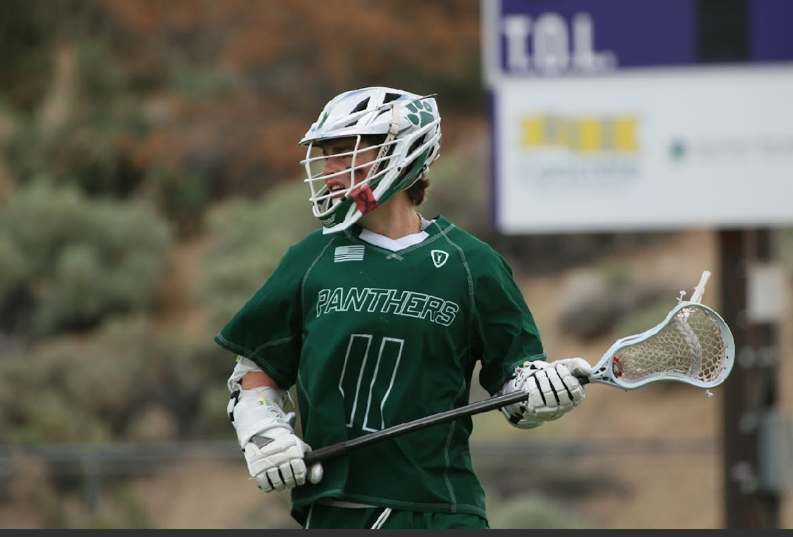
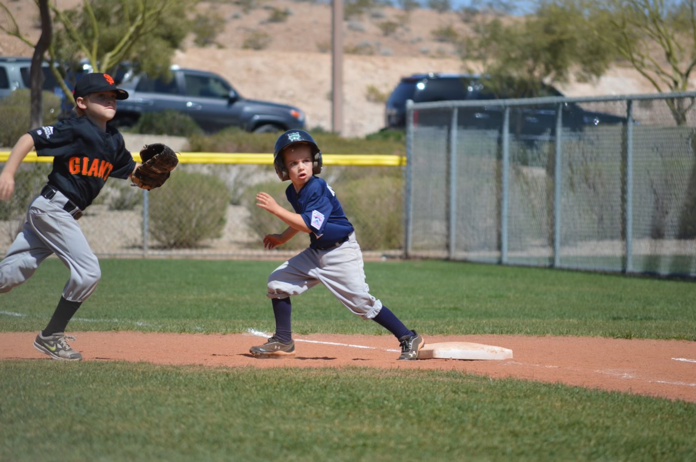

Athletic Career
Competition, Teamwork, and Discipline
The Good Old Highschool Football
Man I would do anything to go back and play football with all of my buddies again! We had the most awesome coach and everyday we would have so much fun together. Football was awesome and everyone needs to experience what it was like.

The Fastest Game on Two Feet: Lacrosse
Lacrosse is awesome! I made so many new friends and learned how to work hard and grind. I was a captian and we won 3 state championships as a team. I love Lacrosse!

Where it Started: Baseball
My athletic journey began on the diamond. Baseball was the first sport I ever played. My dad coached me and my teams all the way up until I was 12 and stopped playing.
